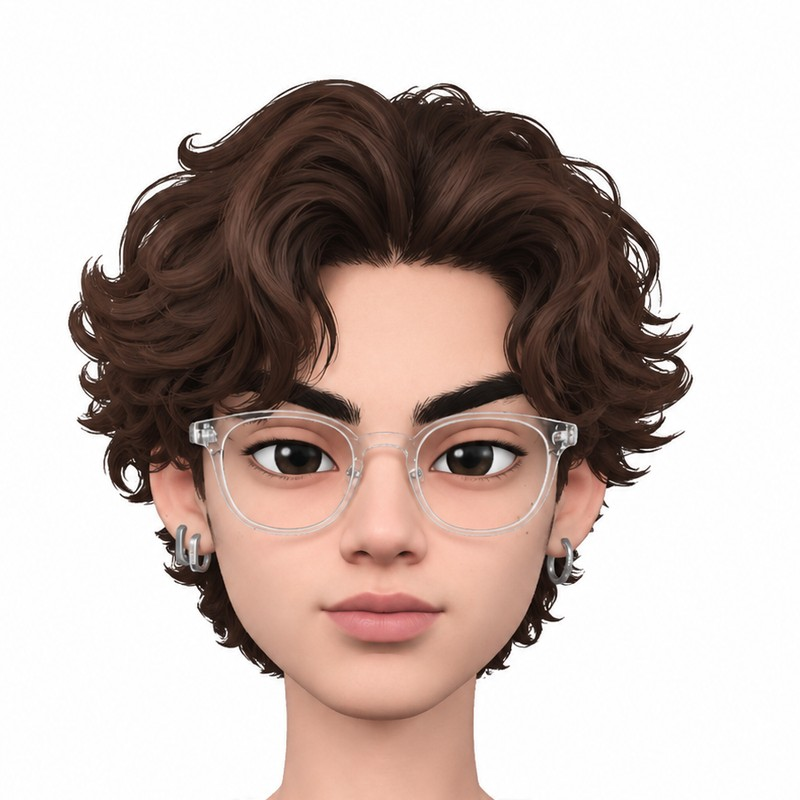

Cocinero con actitud de servicio y compromiso en cada turno; disponible para horarios variables, fines de semana, noches y festivos. Estudiante de Mantenimiento de Equipos Biomédicos en el ITM, con disciplina y orden en el manejo de equipos.
Español — Nativo